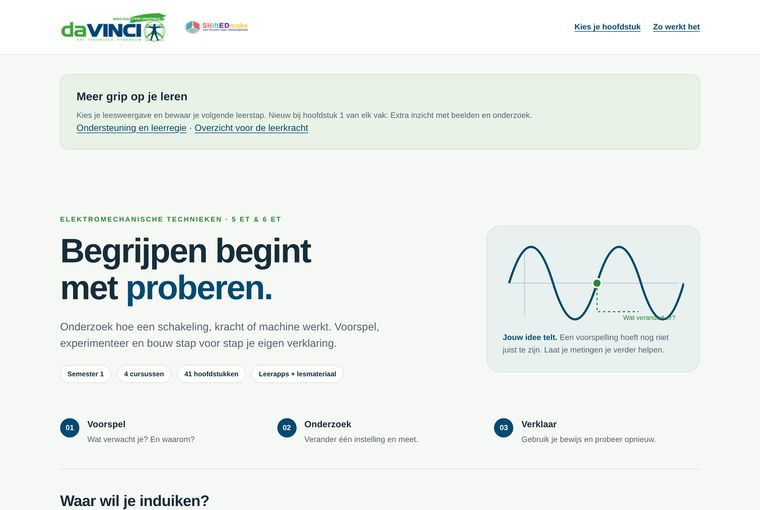

VergrootKTA da Vinci
Leeratelier ET — semester 1
Eén startpagina voor vier cursussen en 41 hoofdstukken, waarin elk hoofdstuk begint met voorspellen in plaats van lezen.
Leerstof doornemenOverzicht en planning
Meer over deze toepassing
Waarom ze gemaakt is
Leerlingen openden een hoofdstuk, lazen de eerste bladzijde en haakten af. Het ontbrak aan één plek waar je ziet wat er is, waar je gebleven bent en waar je opnieuw kunt instappen.
De oorspronkelijke insteek
De paginatekst zelf noemt de insteek: “Begrijpen begint met proberen.” De drieslag voorspel → onderzoek → verklaar staat als vaste stap op de startpagina.
Wat de leerling doet
De leerling kiest een vak en een hoofdstuk, leest de leesweergave die hij zelf instelt, en bewaart zijn volgende leerstap. Elk hoofdstuk opent in een eigen leerapp.
Wat het oplevert voor het leren
Het materiaal van een heel semester krijgt één ingang en één vaste volgorde. Dat scheelt zoekwerk aan het begin van elke studiesessie.
De rol van AI
AI is gebruikt bij de ontwikkeling: structureren van de leerstof, schrijven van de code en nalezen op volledigheid. Tijdens het gebruik draait er geen AI mee.
Toegankelijkheid gecontroleerde functies
- Leesweergave instelbaar per leerling
- Rustige opmaak met veel witruimte
- Bewaarde leerstap zonder account
- Werkt zonder internetverbinding
Mogelijke ondersteuning mogelijke inzet
De vaste volgorde en de bewaarde leerstap halen één beslissing weg bij het starten. Dat kan helpen bij leerlingen die moeilijk aan een taak beginnen of de draad kwijtraken — bij ADHD, maar evengoed bij wie gewoon veel vakken tegelijk heeft.
Beperkingen en aandachtspunten
De hoofdstukbundels bevatten overgenomen cursusbeelden en zijn daarom niet publiek te delen. Van deze startpagina staat hier alleen een schermafbeelding.
Niet publiek te delen